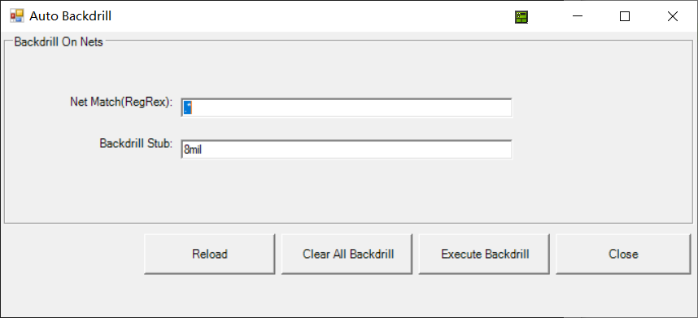

AutoBackdrill
菜单位置
Via->AutoBackdrill
功能描述
自动设定过孔的背钻，支持指定网络名称和Stub长度。仅支持2023R1及之后的版本。
操作说明
确保3D Layout工程处于选中状态，然后在Toolbox上右键，选择 Via->AutoBackdrill. 会弹出AutoBackdrill设定对话框

- Net Match(Regrex)：使用正则表达式匹配需要背钻的网络，默认.*匹配所有网络。
- Backdrill Stub: 背钻精度，默认8mil
Net Match(Regrex)
- 正则表达式使用.匹配任意多字符，比如使用DQ.匹配以DQ开头的Nets.
- 正则表达式的写法请参考 https://www.runoob.com/regexp/regexp-syntax.html
注意事项
- 支持总线的书写方法，比如使用DQ[15:0]匹配 DQ0-DQ15的网络。（注：这种写法并不是Regrex的一部分）
联系作者 yongsheng.guo@ansys.com